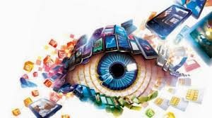

Association for Computing Machinery (ACM)
Las tecnologias de la informacion y comunicaciones se encuentran en cada actividad humana y en todos los campos de la ciencia, ingenieria, negocios entre otros, tanto asi que la computacion se ha convertido en un conocimiento bàsico que todos deben conocer. De manera general, la Association for Computing Machinery (ACM) define a la computacion como cualquier actividad relacionada con las computadoras y orientada a objetivos; por lo tanto, la computacion incluye al diseño y construccion de sistemas de hadware y software para una amplia tgama de propositos, relacionadas con el uso de diferentes tipos de informacion, la realizacion de estudios cientificos, implementancion de sistemas con comportmaiento inteligente, las comunicaciones y el entretenimiento, entre muchas otras, haciendo que la lista sea practicamente infinita y con enormes posibilidades dependiendo del contexto involucrado.
Ciencias de la computaciòn y su importancia en la actualidad
En la era digital en la que vivimos, Ciencias de la Computacion han emergido como una disciplina fundamental que impulsa la innovacion, la conectividad y el progreso en todas las esferas de las sociedad La creciente dependencia de la tecnología en nuestras vidas cotidianas ha llevado a un aumento significativo en la demanda de profesionales capacitados en Ciencias de la Computación. Las Ciencias de la Computación se refieren al estudio teórico y práctico de los fundamentos de la información y la computación. Esta disciplina abarca una amplia gama de áreas, desde la programación y el desarrollo de software hasta la inteligencia artificial y el aprendizaje automático.
La informàtica
La Informática es la rama de la Ingeniería que estudia el hardware, las redes de datos y el software necesarios para tratar información de forma automática. Aunque pueda parecerte una definición muy abstracta, estamos seguros de que sabes mucho más de Informática de lo que crees. Y si no, sigue leyendo un poco más. Seguro que te suena qué es el hardware. Y si no te suena, seguro que has utilizado hardware en muchas ocasiones sin saber que se llama así. El hardware son los ordenadores de sobremesa, los portátiles, los tablets, los teléfonos móviles, las impresoras, las consolas de videojuegos, los lectores de DVDs, los reproductores de música, etcétera. ¿A que sí que sabías qué es el hardware? Lo que quizá no sabías es que estos aparatos están formados internamente por componentes electrónicos a los que también se les llama hardware: ¿te suenan el microprocesador, las tarjetas de memoria, las tarjetas gráficas, los discos duros o los acelerómetros? ¡Seguro que sí! Y aunque no los veas, hay miles de dispositivos llamados sistemas empotrados que ayudan a los coches a tomar mejor las curvas, a los aviones a volar en las peores condiciones atmosféricas o a los semáforos a controlar el tráfico de forma inteligente; también son hardware y también se estudian en Informática.
